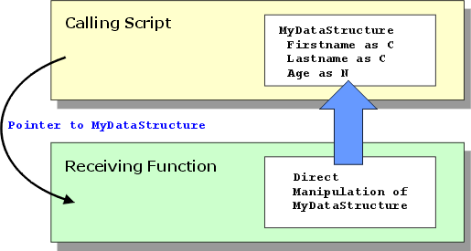

Pointer and Dot Variables
Alpha Five allows you to define pointer variables with sub-elements, so called "dot" variables. Dot variables can have multiple layers of sub-elements. The general syntax for a pointer variable is as follows:
|
dim MyPointer as P dim MyPointer.character_data as C dim MyPointer.logical_data as L dim MyPointer.numeric_data as N dim MyPointer.date_data as D ... dim MyPointer.MyArray as P dim MyPointer.MyArray[1].character_data as C ... |
In the following case the variable Family is implicitly defined as type P (pointer) and the variable lastname is implicitly defined as type C (character).
|
Family.lastname = "smith" Family.father = "John" Family.mother = "Irene" Family.children.child1 = "Tim" Family.children.child2 = "Lara" |
 Note : While Xbasic
allows you to implicitly define variable types, it is considered better
programming practice to explicitly define
variables.
Note : While Xbasic
allows you to implicitly define variable types, it is considered better
programming practice to explicitly define
variables.
In this case, the variable Family has these sub-elements: lastname, father, mother and children. The Family.children variable has these sub-elements: child1 and child2.
You can see the sub-elements of a variable by typing the variable name with a question mark in the Interactive window.
For example:
|
? Family = children father = "John" lastname = "Smith" mother = "Irene" |
Or:
|
? Family.children = child1 = "Tim" child2 = "Lara" |
The sub-elements of a variable can be of different types. For example, you could delete the family.father variable and define the following:
|
Delete family.father Family.father.NAME = "John" Family.father.age = 46 |
The sub-elements of a variable can also be arrays. For example, you could define the following dot variable:
|
dim family as P Family.father = "John" Family.mother = "Joan" dim family.kids[10] as P Family.kids[1].NAME = "Sammy" Family.kids[1].age = 4 Family.kids[2].NAME = "Sonia" Family.kids[2].age = 3 Family.kids[3].NAME = "Samantha" Family.kids[3].age = 2 |
There is no practical limit to the level of nesting of sub-arrays within a dot variable.
 Note : An array variable is a pointer variable.
Note : An array variable is a pointer variable.
When you assign a dot variable to another dot variable, all of the sub-elements of the other dot variable point to the sub-elements of the original dot variable. For example, assume you typed the following into the Interactive window (after defining the Family variable as shown above):
|
a = family ? a.lastname = "Smith" ? a.children.child1 = "Tim" family.lastname = "Jones" ? family.lastname = "Jones" ? a.lastname = "Jones" |
(because "A" simply points to the sub-elements of "family")
You can also use the PROPERTY_RECURSE_ASSIGN() function to assign one dot variable to another. When you use this function, instead of pointing to the original dot variable's sub-elements, the new dot variable contains its own copy of each sub-element. For example, assume you typed the following into the Interactive window (after defining the Family variable as shown above):
|
? family.lastname = "Jones" 'assign at least one sub-element of a new variable B to define it b.lastname = "" property_recurse_assign(b, family) ? b.lastname = "Jones" family.lastname = "Clemmens" ? family.lastname = "Clemmens" ? b.lastname = "Jones" |
(because "B" is its own dot variable. It does not simply point to the sub-elements of "family")
Many of the Alpha Five system variables are "dot" variables. For example, the variables used to define a query, (e.g. QUERY.FILTER, QUERY.ORDER, QUERY.DESCRIPTION, etc.) are all dot variables, and are sub-elements of the QUERY variable. Similarly, the variables used to define a copy operation, (e.g. COPY.DB, COPY.RECORDS, COPY.FIELD1 etc.) are all sub-elements of the COPY variable.
Using Pointers and Dot Variables with Functions
You can pass multiple values to a function when those values are stored as the dot variables of a single pointer.
|
dim ptr as P dim ptr.firstname as C dim ptr.lastname as C dim ptr.phone as C display_name(ptr) |
The function below receives a single variable with multiple components.
|
function display_name as V (myptr as P) ui_msg_box("Name and Phone", alltrim(myptr.firstname) + " " + alltrim(myptr.lastname) + " " + myptr.phone) end function |
Returning Multiple Values from a Function
Functions typically return a single value of a single type. However, it possible to return multiple variables from a function. One scenario is as follows:
the calling function creates a data structure that contains multiple variables (a dot variable or an array )
the calling function sends a pointer to the data structure to the receiving function
the receiving function manipulates the variables in the data structure

The following sample code in the calling script or function illustrates how this might be done.
|
dim mds as P dim mds.firstname as C dim mds.lastname as C dim mds.age as N mds.firstname = "George" mds.lastname = "Washington" mds.age = 35 FunctionName(mds) |
The receiving function would have code like this. Note that it can reference the mds data structure without actually knowing its true name. Note also that FunctionName does not have to do anything to return the changes to the variables.
|
FUNCTION FunctionName as V (abc as P) abc.firstname = "Abraham" abc.lastname = "Lincoln" abc.age = 29 END FUNCTION |
Saving and Restoring Dot Variables
It is common in an application that you will need to save and restore dot variables. For example, assume that you have a dot variable that defines a series of user preferences. There are several techniques that Alpha Five offers for this.
These include:
Saving dot variables to the system registry using the REGISTRY.SAVE_SETTINGS() method
Saving dot variables to an Alpha Five library using the A5_SAVE_SETTINGS() method
If your dot variable is "complex" (i.e. has nested arrays and sub-arrays) Converting the dot variable to a text string, and then saving the string
There are two Alpha Five functions that are particularly useful for converting a dot variable to and from a text string: PROPERTY_TO_STRING() and PROPERTY_FROM_STRING().
DotVariables_in_Library_Files>Storing and Retrieving "Dot" Variables in Library Files
Alpha Five allows you to store "dot" variables in Alpha Five library files ( .ALB, .DDD and .SET files), or in text files.
Certain Alpha Five internal settings that are database specific (such as Backup preferences for a database, or Network Optimize settings) are stored in "dot" variables in the current database's library.
In addition to internal Alpha Five settings, you can also store user defined "dot" variables in libraries.
The Variable Functions and Methods topic describes the commands to save "dot" variables in libraries, and load "dot" variables from libraries.
DotVariables_in_the_System_Registry>Storing and Retrieving "Dot" Variables in the System Registry
Alpha Five allows you to store "dot" variables in the system registry, and to read variables from the system registry into "dot" variables.
"Dot" variables can also be stored in Alpha Five Library files, or in text files. See the A5_LOAD_SETTINGS() and A5_SAVE_SETTINGS() methods for details
When you store a "dot" variable in the Registry, Alpha Five automatically stores all of the sub-elements of the "dot" variable in the registry under the key value that you specify, relative to the root key. The root key is:
|
HKEY_CURRENT_USER\Software\Alpha Software\Alpha Five 5.0 |
If you specify that variables are to be stored under the key value UserIdentity, then the variables are stored in this key:
|
HKEY_CURRENT_USER\Software\Alpha Software\Alpha Five 5.0\UserIdentity |
For security reasons, Alpha Five does not allow you to store variables outside the root key.
To save "dot" variables in the Registry, use the REGISTRY.SAVE_SETTINGS() method. To load variables from the Registry, use the REGISTRY.LOAD_SETTINGS() method. To delete a key from the Registry, use the REGISTRY.DROP_SETTINGS() method.
See Also
What is a Variable?, Registry Methods, Variable Functions and Methods, Arrays